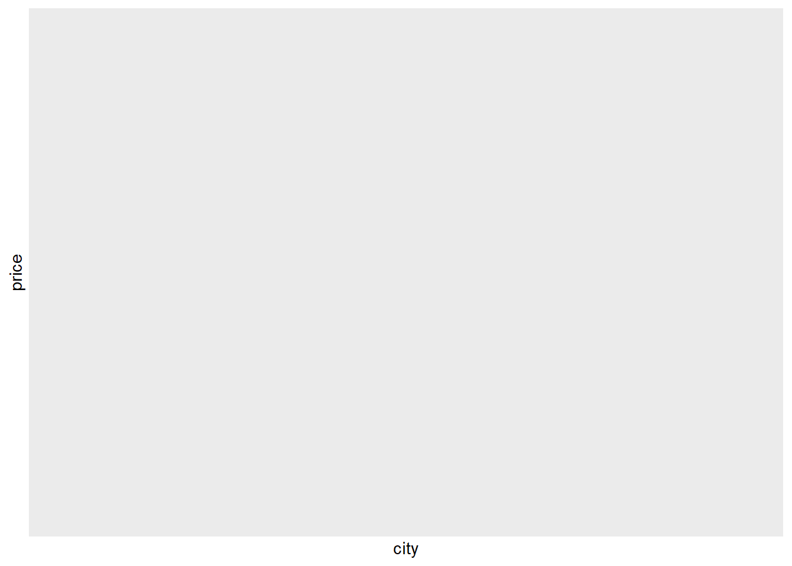
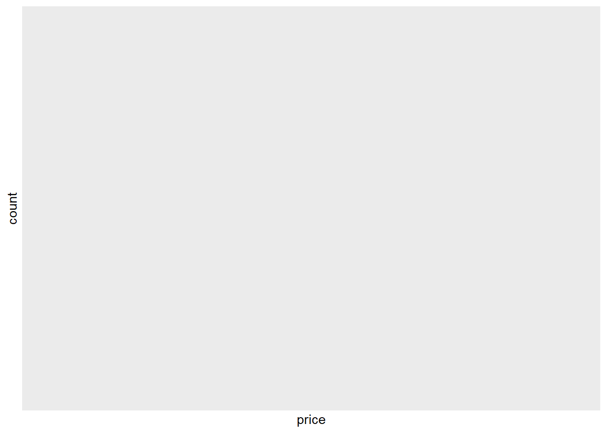

Introdução ao R
Neste capítulo introdutório, você aprenderá:
- como importar dados
- como manipular um conjunto de dados com o operador de canal
- como resumir um conjunto de dados
- como fazer gráficos de dispersão e histogramas
Importando dados
Neste capítulo, exploraremos um conjunto de dados publicamente disponível dos dados do Airbnb. Encontramos esses dados aqui. (Estes são dados reais “raspados” do airbnb.com em julho de 2017. Isso significa que o proprietário do site criou um script para coletar automaticamente esses dados no site airbnb.com. Essa é uma das muitas coisas que você também pode fazer no R. Mas primeiro vamos aprender o básico.) Você pode baixar o conjunto de dados clicando com o botão direito do mouse neste link, selecionando “Salvar link como…” (ou algo semelhante) e salvando o arquivo .csv em um diretório no disco rígido. Como mencionado na introdução, é uma boa ideia salvar seu trabalho em um diretório que é automaticamente copiado pelo software de compartilhamento de arquivos. Mais tarde, salvaremos nosso script no mesmo diretório.
Importando arquivos .csv

Para importar dados para o R, clique em Import Dataset e depois em From text (readr). Uma nova janela será exibida. Clique em Procurar e encontre seu arquivo de dados. Certifique-se de que Primeira linha como nomes esteja selecionada (isso diz ao R para tratar a primeira linha dos seus dados como os títulos das colunas) e clique em Importar. Após clicar em importar, o R Studio abre uma guia Visualizador. Isso mostra seus dados em uma planilha.
Alguns computadores salvam arquivos .csv com ponto e vírgula (;) em vez de vírgulas (,) como separadores ou “delimitadores”. Isso geralmente acontece quando o inglês não é o primeiro ou o único idioma do seu computador. Se seus arquivos estiverem separados por ponto e vírgula, clique em Importar conjunto de dados e encontre seu arquivo de dados, mas agora escolha Ponto e vírgula no delimitador do menu suspenso.
Nota: se você não salvou o conjunto de dados clicando com o botão direito do mouse no link e selecionando “Salvar link como…”, mas clicou com o botão esquerdo do mouse no link, seu navegador pode ter acabado abrindo o conjunto de dados. Você pode salvar o conjunto de dados pressionando Ctrl + S. Observe, no entanto, que seu navegador pode acabar salvando o conjunto de dados como um arquivo .txt. É importante alterar a extensão do seu arquivo nos argumentos para o comando read_csv abaixo.
Ajustando seu diretório de trabalho
Depois de importar seus dados com Import Dataset, verifique a janela do console. Você verá o comando para abrir o Visualizador (View()) e, uma linha acima, verá o comando que lê os dados. Copie o comando que lê os dados do console para o seu script. No meu caso, fica assim:
#tomslee_airbnb_belgium_1454_2017_07_14 <- read.csv("c:/Dropbox/work/teaching/R/data/tomslee_airbnb_belgium_1454_2017-07-14.csv")
# Mude .csv para .txt se necessario
airbnb<-read.csv(file="http://users.telenet.be/samuelfranssens/tutorial_data/tomslee_airbnb_belgium_1454_2017-07-14.csv", sep=",", head=TRUE)Esta linha tem a seguinte leitura (da direita para a esquerda): a funcao read_csv deve ler o arquivo tomslee_airbnb_belgium_1454_2017-07-14.csv no diretorio c: / Dropbox / work / teaching / R / data / (voce vera um diretorio diferente aqui ) Em seguida, R deve atribuir (\(<-\)) esses dados a um objeto chamado tomslee_airbnb_belgium_1454_2017_07_14.
Antes de explicar cada um desses conceitos, vamos simplificar esta linha de código:
#setwd("c:/Dropbox/work/teaching/R/data/") # Ajusta o diretorio de trabalho para onde o R precisa apontar para o arquivo .csv
#airbnb <- read_csv("tomslee_airbnb_belgium_1454_2017-07-14.csv")
# read_csv agora nao precisa mais de um diretorio e somente precisa de um nome de arquivo
# Atribuimos os dados a um objeto com um nome mais simples: airbnb em vez de tomslee_airbnb_belgium_1454_2017_07_14O comando setwd informa ao R onde está o seu diretório de trabalho. Seu diretório de trabalho é uma pasta no seu computador onde o R procurará dados, onde as plotagens serão salvas etc. Defina seu diretório de trabalho na pasta em que os dados foram armazenados. Agora, o arquivo read_csv não requer mais um diretório.
Você só precisa definir seu diretório de trabalho uma vez, na parte superior do seu script. Você pode verificar se está definido corretamente executando getwd(). Observe que em um computador com Windows, os caminhos de arquivo possuem barras invertidas que separam as pastas (“C: folder data”).
No entanto, o caminho do arquivo digitado no R deve usar barras (“C: / folder / data”).
Salve este script no diretório de trabalho (no meu caso: c: / Dropbox / trabalho / ensino / R / dados /)). No futuro, você pode simplesmente executar essas linhas de código para importar seus dados em vez de clicar em Importar conjunto de dados (a execução de linhas de código é muito mais rápida do que apontar e clicar - uma das vantagens do uso do R).
Não se esqueça de carregar o pacote tidyverse na parte superior do seu script (mesmo antes de definir o diretório de trabalho) com a biblioteca (tidyverse).
Atribuindo dados a objetos
Observe a seta \(<-\) no meio da linha que importou o arquivo .csv:
\(<-\) é o operador de atribuição. Nesse caso, atribuímos o conjunto de dados (ou seja, os dados que lemos do arquivo .csv) a um objeto chamado airbnb. Um objeto é uma estrutura de dados. Todos os objetos que você criar serão exibidos no painel Ambiente (a janela superior direita). O R Studio fornece um atalho para escrever \(<-\): Alt + - (no Windows). É uma boa ideia aprender esse atalho de cor.
Quando você importa dados para o R, ele se torna um objeto chamado quadro de dados. Um quadro de dados é como uma tabela ou uma planilha do Excel. Tem duas dimensões: linhas e colunas. Geralmente, as linhas representam suas observações, as colunas representam as diferentes variáveis. Quando seus dados consistem em apenas uma dimensão (por exemplo, uma sequência de números ou palavras), eles são armazenados em um segundo tipo de objeto chamado vetor. Mais tarde, aprenderemos como criar vetores.
Importando arquivos do Excel
O R funciona melhor com arquivos .csv (valores separados por vírgula). No entanto, os dados geralmente são armazenados como um arquivo do Excel (você pode baixar o conjunto de dados do Airbnb como um arquivo do Excel aqui). O R também pode lidar com isso, mas você precisará carregar primeiro um pacote chamado readxl (este pacote faz parte do pacote tidyverse, mas não é carregado com a biblioteca (tidyverse) porque não é um pacote tidyverse principal):
library(readxl) # carrega o pacote
#airbnb.excel <- read_excel (path = "tomslee_airbnb_belgium_1454_2017-07-14.xlsx", sheet = "Sheet1")
# verifique se o arquivo do Excel está salvo no seu diretório de trabalho
# você também pode deixar de fora o path = & sheet =
# então o comando se torna: read_excel ("tomslee_airbnb_belgium_1454_2017-07-14.xlsx", "Sheet1")read_excel é uma função do pacote readxl. São necessários dois argumentos: o primeiro é o nome do arquivo e o segundo é o nome da planilha do Excel que você deseja ler.
Lendo os dados do Airbnb
Nosso conjunto de dados contém informações sobre quartos na Bélgica listados no airbnb.com. Sabemos para cada sala (identificada por room_id): quem é o hóspede (host_id), que tipo de sala é (room_type), onde está localizada (country, city, neighborhood e até a latitude e longitude exata), como muitas críticas que recebeu (reviews), como as pessoas estavam satisfeitas (overall_satisfaction), preço (price) e características dos quartos (accommodates, bedrooms, bathrooms, minstay).
Uma etapa realmente importante é verificar se seus dados foram importados corretamente. É uma boa prática sempre inspecionar seus dados. Você vê algum valor ausente, os números e os nomes fazem sentido? Se você começar imediatamente com a análise, corre o risco de ter que refazê-la porque os dados não foram lidos corretamente, ou pior, analisando dados errados sem perceber.
## room_id survey_id host_id room_type country city borough
## 1 5141135 1454 20676997 Shared room NA Belgium Gent
## 2 13128333 1454 46098805 Shared room NA Belgium Brussel
## 3 8298885 1454 30924336 Shared room NA Belgium Brussel
## 4 13822088 1454 81440431 Shared room NA Belgium Oostende
## 5 18324301 1454 14294054 Shared room NA Belgium Brussel
## 6 12664969 1454 68810179 Shared room NA Belgium Brussel
## 7 15452889 1454 99127166 Shared room NA Belgium Gent
## 8 3911778 1454 3690027 Shared room NA Belgium Brussel
## 9 14929414 1454 30624501 Shared room NA Belgium Verviers
## 10 8497852 1454 40513093 Shared room NA Belgium Brussel
## neighborhood reviews overall_satisfaction accommodates bedrooms bathrooms
## 1 Gent 9 4.5 2 1 NA
## 2 Schaarbeek 2 0.0 2 1 NA
## 3 Elsene 12 4.0 2 1 NA
## 4 Middelkerke 19 4.5 4 1 NA
## 5 Anderlecht 5 5.0 2 1 NA
## 6 Koekelberg 28 5.0 4 1 NA
## 7 Gent 2 0.0 2 1 NA
## 8 Elsene 13 4.0 2 1 NA
## 9 Baelen 2 0.0 8 1 NA
## 10 Etterbeek 57 4.5 3 1 NA
## price minstay name
## 1 59 NA Spacious shared apartment in Gent
## 2 53 NA appartement cosy
## 3 46 NA YOU'LL FEEL AT HOME!!!
## 4 56 NA studio douillet pour un séjour "Low-budget"
## 5 47 NA NICE place..metro..tram. TGV..BUS.................
## 6 60 NA Chez Toi in Bruxelles
## 7 41 NA a day in the life of a beautifull home
## 8 36 NA Calm Bruxellois area
## 9 18 NA Ecurie du Bois Doré, dortoir agréable
## 10 38 NA Bel appartement cosy à partager
## last_modified latitude longitude
## 1 2017-07-17 03:49:10.237453 51.03420 3.714149
## 2 2017-07-17 03:49:09.020871 50.86915 4.384435
## 3 2017-07-17 03:49:09.014704 50.82829 4.376590
## 4 2017-07-17 03:49:07.929876 51.19050 2.822373
## 5 2017-07-17 03:49:07.918941 50.83971 4.333850
## 6 2017-07-17 03:49:06.301487 50.85910 4.336969
## 7 2017-07-17 03:49:04.064557 51.05508 3.746806
## 8 2017-07-17 03:49:02.489395 50.81425 4.384256
## 9 2017-07-17 03:49:02.477617 50.63320 5.950236
## 10 2017-07-17 03:49:01.173568 50.83771 4.394056
## location
## 1 0101000020E6100000D2C43BC093B60D40874F3A9160844940
## 2 0101000020E610000044C02154A9891140321CCF67406F4940
## 3 0101000020E6100000A80018CFA0811140BC404981056A4940
## 4 0101000020E610000042E8A04B38940640AAF1D24D62984940
## 5 0101000020E610000012143FC6DC551140F67AF7C77B6B4940
## 6 0101000020E61000003410CB660E591140BD8BF7E3F66D4940
## 7 0101000020E610000011A7936C75F90D40B265F9BA0C874940
## 8 0101000020E6100000C72AA5677A8911400C73823639684940
## 9 0101000020E61000006CED7DAA0ACD174071766B990C514940
## 10 0101000020E6100000992B836A83931140EE3F321D3A6B4940O R nos diz que estamos lidando com uma __tibble_ (essa é apenas outra palavra para quadro de dados) com 17651 linhas ou observações e 20 colunas ou variáveis. Para cada coluna, é fornecido o tipo da variável: int (inteiro), chr (caractere), dbl (duplo), dttm (data e hora). Variáveis inteiras e duplas armazenam números (inteiro para números redondos, duplicam para números com decimais), variáveis de caracteres armazenam letras, variáveis de data e hora armazenam datas e / ou horas.
O R imprime apenas os dados das dez primeiras linhas e o número máximo de colunas que cabem na tela. Se, no entanto, você deseja inspecionar todo o conjunto de dados, clique duas vezes no objeto airbnb no painel Ambiente (a janela superior direita) para abrir uma aba Visualizador ou executar a Visualização (airbnb). Observe o V maiúsculo no comando Visualizar. O R sempre diferencia maiúsculas de minúsculas!
Você também pode usar o comando print para solicitar mais (ou menos) linhas e colunas na janela do console:
# Imprima 25 linhas (defina como Inf para imprimir todas as linhas) e defina a largura como 100 para ver mais colunas.
# Observe que as colunas que nao cabem na primeira tela com 25 linhas
# sao impressos abaixo das 25 linhas iniciais.
#print (airbnb, n = 25, width = 100)
airbnb[1:25,]## room_id survey_id host_id room_type country city borough
## 1 5141135 1454 20676997 Shared room NA Belgium Gent
## 2 13128333 1454 46098805 Shared room NA Belgium Brussel
## 3 8298885 1454 30924336 Shared room NA Belgium Brussel
## 4 13822088 1454 81440431 Shared room NA Belgium Oostende
## 5 18324301 1454 14294054 Shared room NA Belgium Brussel
## 6 12664969 1454 68810179 Shared room NA Belgium Brussel
## 7 15452889 1454 99127166 Shared room NA Belgium Gent
## 8 3911778 1454 3690027 Shared room NA Belgium Brussel
## 9 14929414 1454 30624501 Shared room NA Belgium Verviers
## 10 8497852 1454 40513093 Shared room NA Belgium Brussel
## 11 19372053 1454 18715177 Shared room NA Belgium Tournai
## 12 19855549 1454 128685860 Shared room NA Belgium Brussel
## 13 6772358 1454 34993608 Shared room NA Belgium Gent
## 14 13852832 1454 81817614 Shared room NA Belgium Arlon
## 15 11581251 1454 49968974 Shared room NA Belgium Kortrijk
## 16 3645177 1454 18411614 Shared room NA Belgium Antwerpen
## 17 12032748 1454 63713892 Shared room NA Belgium Verviers
## 18 12034268 1454 63713892 Shared room NA Belgium Verviers
## 19 427739 1454 1328011 Shared room NA Belgium Gent
## 20 14194882 1454 86071645 Shared room NA Belgium Brussel
## 21 19298546 1454 107330233 Shared room NA Belgium Leuven
## 22 12133666 1454 62134289 Shared room NA Belgium Brugge
## 23 4419833 1454 22943117 Shared room NA Belgium Ath
## 24 15573750 1454 20497610 Shared room NA Belgium Leuven
## 25 1334575 1454 3508041 Shared room NA Belgium Tongeren
## neighborhood reviews overall_satisfaction accommodates bedrooms
## 1 Gent 9 4.5 2 1
## 2 Schaarbeek 2 0.0 2 1
## 3 Elsene 12 4.0 2 1
## 4 Middelkerke 19 4.5 4 1
## 5 Anderlecht 5 5.0 2 1
## 6 Koekelberg 28 5.0 4 1
## 7 Gent 2 0.0 2 1
## 8 Elsene 13 4.0 2 1
## 9 Baelen 2 0.0 8 1
## 10 Etterbeek 57 4.5 3 1
## 11 Brunehaut 1 0.0 4 1
## 12 Etterbeek 0 0.0 2 1
## 13 Gent 143 5.0 2 1
## 14 Arlon 0 0.0 1 1
## 15 Waregem 1 0.0 4 1
## 16 Boom 3 4.5 2 1
## 17 Büllingen 0 0.0 2 1
## 18 Büllingen 0 0.0 2 1
## 19 Gent 9 5.0 2 1
## 20 Sint-Jans-Molenbeek 0 0.0 5 1
## 21 Rotselaar 1 0.0 2 1
## 22 Jabbeke 0 0.0 1 1
## 23 Ath 0 0.0 6 1
## 24 Leuven 3 5.0 1 1
## 25 Voeren 13 4.5 2 1
## bathrooms price minstay name
## 1 NA 59 NA Spacious shared apartment in Gent
## 2 NA 53 NA appartement cosy
## 3 NA 46 NA YOU'LL FEEL AT HOME!!!
## 4 NA 56 NA studio douillet pour un séjour "Low-budget"
## 5 NA 47 NA NICE place..metro..tram. TGV..BUS.................
## 6 NA 60 NA Chez Toi in Bruxelles
## 7 NA 41 NA a day in the life of a beautifull home
## 8 NA 36 NA Calm Bruxellois area
## 9 NA 18 NA Ecurie du Bois Doré, dortoir agréable
## 10 NA 38 NA Bel appartement cosy à partager
## 11 NA 14 NA Chambre 3/4 pers.dans ferme du vieux chateau
## 12 NA 37 NA Cosy & bright living room with comfy sleep options
## 13 NA 28 NA Couch-bed in Ghent
## 14 NA 177 NA Logement
## 15 NA 147 NA Terrasappartement 62
## 16 NA 177 NA PRIVATE ROOM near TOMORROWLAND
## 17 NA 129 NA Spacious, two-person room
## 18 NA 140 NA Spacious, two-person room
## 19 NA 141 NA penthouse room + hammam + sauna
## 20 NA 136 NA Appartement
## 21 NA 132 NA House with garden, 15min walk from Rock Werchter
## 22 NA 117 NA Oud gemeentehuis
## 23 NA 106 NA Chambre d'hôtes familiale
## 24 NA 116 NA The Cozy Duplex Shared Room in Leuven center
## 25 NA 106 NA Voerstreek, B&B in natural area, near river, 2p,br
## last_modified latitude longitude
## 1 2017-07-17 03:49:10.237453 51.03420 3.714149
## 2 2017-07-17 03:49:09.020871 50.86915 4.384435
## 3 2017-07-17 03:49:09.014704 50.82829 4.376590
## 4 2017-07-17 03:49:07.929876 51.19050 2.822373
## 5 2017-07-17 03:49:07.918941 50.83971 4.333850
## 6 2017-07-17 03:49:06.301487 50.85910 4.336969
## 7 2017-07-17 03:49:04.064557 51.05508 3.746806
## 8 2017-07-17 03:49:02.489395 50.81425 4.384256
## 9 2017-07-17 03:49:02.477617 50.63320 5.950236
## 10 2017-07-17 03:49:01.173568 50.83771 4.394056
## 11 2017-07-17 03:49:01.170957 50.51770 3.384048
## 12 2017-07-17 03:49:01.162682 50.82749 4.384322
## 13 2017-07-17 03:49:01.157750 51.03783 3.714062
## 14 2017-07-17 03:48:56.542112 49.68641 5.830874
## 15 2017-07-17 03:48:56.536289 50.87617 3.401739
## 16 2017-07-17 03:48:56.533485 51.09316 4.380444
## 17 2017-07-17 03:48:55.128993 50.40610 6.264116
## 18 2017-07-17 03:48:55.126446 50.40801 6.262573
## 19 2017-07-17 03:48:55.118066 51.05114 3.746296
## 20 2017-07-17 03:48:55.115298 50.86178 4.342785
## 21 2017-07-17 03:48:55.107495 50.97806 4.692590
## 22 2017-07-17 03:48:53.534073 51.18761 3.144082
## 23 2017-07-17 03:48:53.529122 50.62833 3.685758
## 24 2017-07-17 03:48:53.526629 50.87826 4.713825
## 25 2017-07-17 03:48:53.521226 50.75655 5.718163
## location
## 1 0101000020E6100000D2C43BC093B60D40874F3A9160844940
## 2 0101000020E610000044C02154A9891140321CCF67406F4940
## 3 0101000020E6100000A80018CFA0811140BC404981056A4940
## 4 0101000020E610000042E8A04B38940640AAF1D24D62984940
## 5 0101000020E610000012143FC6DC551140F67AF7C77B6B4940
## 6 0101000020E61000003410CB660E591140BD8BF7E3F66D4940
## 7 0101000020E610000011A7936C75F90D40B265F9BA0C874940
## 8 0101000020E6100000C72AA5677A8911400C73823639684940
## 9 0101000020E61000006CED7DAA0ACD174071766B990C514940
## 10 0101000020E6100000992B836A83931140EE3F321D3A6B4940
## 11 0101000020E6100000F0C000C287120B40E3FC4D2844424940
## 12 0101000020E61000008388D4B48B8911405E66D828EB694940
## 13 0101000020E6100000E4874A2366B60D4062670A9DD7844940
## 14 0101000020E6100000066344A2D05217407DCA3159DCD74840
## 15 0101000020E6100000D238D4EFC2360B40105A0F5F26704940
## 16 0101000020E610000073D6A71C938511405D328E91EC8B4940
## 17 0101000020E6100000BE66B96C740E19408B6B7C26FB334940
## 18 0101000020E61000001C40BFEFDF0C19407138F3AB39344940
## 19 0101000020E6100000BE1589096AF80D404D2D5BEB8B864940
## 20 0101000020E6100000C93CF207035F1140253D0CAD4E6E4940
## 21 0101000020E610000085251E5036C512408EB27E33317D4940
## 22 0101000020E6100000C689AF76142709408733BF9A03984940
## 23 0101000020E610000050C3B7B06E7C0D40FE9C82FC6C504940
## 24 0101000020E6100000D044D8F0F4DA1240172D40DB6A704940
## 25 0101000020E6100000FBC9181F66DF1640B6F5D37FD6604940Manipulando dataframes
Transformando variáveis
Fatoração
Vamos observar nosso dataset novamente:
## room_id survey_id host_id room_type country city borough
## 1 5141135 1454 20676997 Shared room NA Belgium Gent
## 2 13128333 1454 46098805 Shared room NA Belgium Brussel
## 3 8298885 1454 30924336 Shared room NA Belgium Brussel
## 4 13822088 1454 81440431 Shared room NA Belgium Oostende
## 5 18324301 1454 14294054 Shared room NA Belgium Brussel
## 6 12664969 1454 68810179 Shared room NA Belgium Brussel
## 7 15452889 1454 99127166 Shared room NA Belgium Gent
## 8 3911778 1454 3690027 Shared room NA Belgium Brussel
## 9 14929414 1454 30624501 Shared room NA Belgium Verviers
## 10 8497852 1454 40513093 Shared room NA Belgium Brussel
## 11 19372053 1454 18715177 Shared room NA Belgium Tournai
## 12 19855549 1454 128685860 Shared room NA Belgium Brussel
## 13 6772358 1454 34993608 Shared room NA Belgium Gent
## 14 13852832 1454 81817614 Shared room NA Belgium Arlon
## 15 11581251 1454 49968974 Shared room NA Belgium Kortrijk
## 16 3645177 1454 18411614 Shared room NA Belgium Antwerpen
## 17 12032748 1454 63713892 Shared room NA Belgium Verviers
## 18 12034268 1454 63713892 Shared room NA Belgium Verviers
## 19 427739 1454 1328011 Shared room NA Belgium Gent
## 20 14194882 1454 86071645 Shared room NA Belgium Brussel
## neighborhood
## 1 Gent
## 2 Schaarbeek
## 3 Elsene
## 4 Middelkerke
## 5 Anderlecht
## 6 Koekelberg
## 7 Gent
## 8 Elsene
## 9 Baelen
## 10 Etterbeek
## 11 Brunehaut
## 12 Etterbeek
## 13 Gent
## 14 Arlon
## 15 Waregem
## 16 Boom
## 17 Büllingen
## 18 Büllingen
## 19 Gent
## 20 Sint-Jans-MolenbeekVimos que room_id e host_id são “identificadores” ou rótulos que identificam as observações. São nomes (neste caso, apenas números) para as salas(quartos) e hóspedes específicos. No entanto, vemos que o R os trata como números inteiros, ou seja, como números. Isso significa que poderíamos adicionar os room_id‘s de duas salas diferentes e obter um novo número. No entanto, isso não faria muito sentido, porque os room_id são apenas rótulos.
Certifique-se de que R trate os identificadores como rótulos, em vez de números, fatorando-os. Observe o operador $. Este operador muito importante nos permite selecionar variáveis específicas de um quadro de dados, neste caso room_id e host_id.
Uma variável de fator é semelhante a uma variável de caractere, pois armazena letras. Os fatores são mais úteis para variáveis que podem assumir apenas um número de categorias pré-determinadas. Eles devem, por exemplo, ser usados para variáveis dependentes categóricas - por exemplo, se uma venda foi feita ou não: venda versus não venda. Você pode pensar em fatores como variáveis que armazenam rótulos. Os rótulos reais não são tão importantes (não nos importamos se uma venda é chamada de venda ou sucesso ou algo mais), apenas os usamos para fazer uma distinção entre categorias diferentes. É muito importante fatorar variáveis inteiras que representam variáveis independentes ou dependentes categóricas, porque, se não fatorarmos essas variáveis, elas serão tratadas como contínuas em vez de variáveis categóricas nas análises. Por exemplo, uma variável pode representar uma venda como 1 e uma não-venda como 0. Nesse caso, é importante informar ao R que essa variável deve ser tratada como uma variável categórica em vez de contínua.
As variáveis de caractere são diferentes das variáveis de fator, pois não são apenas rótulos para categorias. Um exemplo de variável de caractere seria uma variável que armazena as respostas dos entrevistados para uma pergunta em aberto. Aqui, o conteúdo real é importante (nós nos importamos se alguém descreve sua estadia no Airbnb como muito boa ou excelente ou outra coisa).
No conjunto de dados do airbnb, os room_id não são rigorosamente determinados de antemão, mas definitivamente são rótulos e não devem ser tratados como números. Por isso, pedimos para o R convertê-los em fatores. Vamos dar uma olhada no conjunto de dados do airbnb novamente para verificar se o tipo dessas variáveis mudou após fatorar:
## 'data.frame': 17651 obs. of 22 variables:
## $ room_id : int 5141135 13128333 8298885 13822088 18324301 12664969 15452889 3911778 14929414 8497852 ...
## $ survey_id : int 1454 1454 1454 1454 1454 1454 1454 1454 1454 1454 ...
## $ host_id : int 20676997 46098805 30924336 81440431 14294054 68810179 99127166 3690027 30624501 40513093 ...
## $ room_type : chr "Shared room" "Shared room" "Shared room" "Shared room" ...
## $ country : logi NA NA NA NA NA NA ...
## $ city : chr "Belgium" "Belgium" "Belgium" "Belgium" ...
## $ borough : chr "Gent" "Brussel" "Brussel" "Oostende" ...
## $ neighborhood : chr "Gent" "Schaarbeek" "Elsene" "Middelkerke" ...
## $ reviews : int 9 2 12 19 5 28 2 13 2 57 ...
## $ overall_satisfaction: num 4.5 0 4 4.5 5 5 0 4 0 4.5 ...
## $ accommodates : int 2 2 2 4 2 4 2 2 8 3 ...
## $ bedrooms : num 1 1 1 1 1 1 1 1 1 1 ...
## $ bathrooms : logi NA NA NA NA NA NA ...
## $ price : num 59 53 46 56 47 60 41 36 18 38 ...
## $ minstay : logi NA NA NA NA NA NA ...
## $ name : chr "Spacious shared apartment in Gent" "appartement cosy" "YOU'LL FEEL AT HOME!!!" "studio douillet pour un séjour \"Low-budget\"" ...
## $ last_modified : chr "2017-07-17 03:49:10.237453" "2017-07-17 03:49:09.020871" "2017-07-17 03:49:09.014704" "2017-07-17 03:49:07.929876" ...
## $ latitude : num 51 50.9 50.8 51.2 50.8 ...
## $ longitude : num 3.71 4.38 4.38 2.82 4.33 ...
## $ location : chr "0101000020E6100000D2C43BC093B60D40874F3A9160844940" "0101000020E610000044C02154A9891140321CCF67406F4940" "0101000020E6100000A80018CFA0811140BC404981056A4940" "0101000020E610000042E8A04B38940640AAF1D24D62984940" ...
## $ room_id_F : Factor w/ 17651 levels "2352","2354",..: 3018 9403 5877 10201 15058 9008 11815 2187 11309 6053 ...
## $ host_id_F : Factor w/ 13258 levels "2582","6253",..: 4409 8169 6071 10679 3314 9992 11493 848 6016 7488 ...Vemos que o tipo de room_id e host_id agora é fct (fator).
Transformações numéricas
Vamos dar uma olhada nas classificações das acomodações:
# Uso a funcao head para garantir que o R mostre apenas as primeiras classificacoes.
# Caso contrario, teremos uma lista muito longa de classificacoes..
head(airbnb$overall_satisfaction)## [1] 4.5 0.0 4.0 4.5 5.0 5.0Vemos que as classificações estão em uma escala de 0 a 5. Se preferirmos ter classificações em uma escala de 0 a 100, poderíamos simplesmente multiplicar as classificações por 20:
airbnb$overall_satisfaction_100 <- airbnb$overall_satisfaction * 20
# Perceba que criamos uma nova variavel overall_satisfaction_100.
# A variavel original overall_satisfaction continua inalterada.
# Você tambem pode inspecionar todo o conjunto de dados com o Visualizador
# e veja se ha uma nova coluna a direita.
head(airbnb$overall_satisfaction_100) ## [1] 90 0 80 90 100 100Transformando variáveis com a função mutate
Também podemos transformar variáveis com a função mutate:
##
## Attaching package: 'dplyr'## The following objects are masked from 'package:stats':
##
## filter, lag## The following objects are masked from 'package:base':
##
## intersect, setdiff, setequal, unionairbnb <- mutate(airbnb,
room_id_F = factor(room_id), host_id_F = factor(host_id),
overall_satisfaction_100 = overall_satisfaction * 20)Isso instrui R a pegar o conjunto de dados do airbnb, criar uma nova variável room_id_F que deve ser a fatoração de room_id, uma nova variável host_id_F que deve ser a fatoração de host_id e uma nova variável overall_satisfaction_100 que deve ser a satisfação geral vezes 20. O conjunto de dados com esses mutações (transformações) devem ser atribuídas ao objeto airbnb. Observe que não precisamos usar o operador $ aqui, porque a função mutate sabe desde seu primeiro argumento (airbnb) onde procurar determinadas variáveis e, portanto, não precisamos especificá-lo posteriormente com airbnb $. Uma vantagem do uso da função mutate é que ela mantém bem todas as transformações desejadas dentro de um comando. Outra grande vantagem do uso do mutate será discutida na seção sobre o operador pipe.
Incluindo ou excluindo e renomeando variáveis (colunas)
Se olharmos para os dados, também podemos ver que country é NA, o que significa que não está disponível ou está ausente. city é sempre a Bélgica (o que está errado porque a Bélgica é um país, não uma cidade) e o borought contém as informações da cidade. Vamos corrigir esses erros removendo a variável country de nosso conjunto de dados e renomeando city e borought. Também excluiremos o survey_id porque essa variável é constante nas observações e não a usaremos no restante da análise:
#library(dplyr)
#airbnb <- airbnb%>%
# select(-country, -survey_id)
# Diga R para remover country & survey_id do quadro de dados do airbnb incluindo um sinal de menos antes dessas variáveis.# Atribua novamente esse novo quadro de dados ao objeto airbnb.
str(airbnb) # Agora você verá que o country e o survey_id se foram.## 'data.frame': 17651 obs. of 23 variables:
## $ room_id : int 5141135 13128333 8298885 13822088 18324301 12664969 15452889 3911778 14929414 8497852 ...
## $ survey_id : int 1454 1454 1454 1454 1454 1454 1454 1454 1454 1454 ...
## $ host_id : int 20676997 46098805 30924336 81440431 14294054 68810179 99127166 3690027 30624501 40513093 ...
## $ room_type : chr "Shared room" "Shared room" "Shared room" "Shared room" ...
## $ country : logi NA NA NA NA NA NA ...
## $ city : chr "Belgium" "Belgium" "Belgium" "Belgium" ...
## $ borough : chr "Gent" "Brussel" "Brussel" "Oostende" ...
## $ neighborhood : chr "Gent" "Schaarbeek" "Elsene" "Middelkerke" ...
## $ reviews : int 9 2 12 19 5 28 2 13 2 57 ...
## $ overall_satisfaction : num 4.5 0 4 4.5 5 5 0 4 0 4.5 ...
## $ accommodates : int 2 2 2 4 2 4 2 2 8 3 ...
## $ bedrooms : num 1 1 1 1 1 1 1 1 1 1 ...
## $ bathrooms : logi NA NA NA NA NA NA ...
## $ price : num 59 53 46 56 47 60 41 36 18 38 ...
## $ minstay : logi NA NA NA NA NA NA ...
## $ name : chr "Spacious shared apartment in Gent" "appartement cosy" "YOU'LL FEEL AT HOME!!!" "studio douillet pour un séjour \"Low-budget\"" ...
## $ last_modified : chr "2017-07-17 03:49:10.237453" "2017-07-17 03:49:09.020871" "2017-07-17 03:49:09.014704" "2017-07-17 03:49:07.929876" ...
## $ latitude : num 51 50.9 50.8 51.2 50.8 ...
## $ longitude : num 3.71 4.38 4.38 2.82 4.33 ...
## $ location : chr "0101000020E6100000D2C43BC093B60D40874F3A9160844940" "0101000020E610000044C02154A9891140321CCF67406F4940" "0101000020E6100000A80018CFA0811140BC404981056A4940" "0101000020E610000042E8A04B38940640AAF1D24D62984940" ...
## $ room_id_F : Factor w/ 17651 levels "2352","2354",..: 3018 9403 5877 10201 15058 9008 11815 2187 11309 6053 ...
## $ host_id_F : Factor w/ 13258 levels "2582","6253",..: 4409 8169 6071 10679 3314 9992 11493 848 6016 7488 ...
## $ overall_satisfaction_100: num 90 0 80 90 100 100 0 80 0 90 ...#airbnb <- rename(airbnb, country = city, city = borough)
# Diga ao R para renomear algumas variáveis do quadro de dados do airbnb e reatribuir esse novo quadro de dados ao objeto do airbnb.
# Nota: a sintaxe é um pouco contra-intuitiva: novo nome de variável (country) = nome da variável antiga (city)!
# country = Bélgica agora e cidade se refere a cidadesIncluindo ou excluindo observações (linhas)
Criando um vetor com c()
Mais adiante, faremos um gráfico dos preços do Airbnb nas dez maiores cidades da Bélgica (em termos de população): Bruxelas, Antuérpia, Gent, Charleroi, Liège, Bruges, Namur, Lovaina, Mons e Aalst.
Para isso, precisamos criar um objeto de dados que tenha apenas dados para as dez maiores cidades. Para fazer isso, primeiro precisamos de um vetor com os nomes das dez maiores cidades, para que, na próxima seção, possamos dizer ao R para incluir apenas os dados dessas cidades:
topten <- c("Brussel","Antwerpen","Gent","Charleroi","Liege","Brugge","Namur","Leuven","Mons","Aalst") # Cria um vetor com as 10 maiores cidades
topten # Mostra esse vetor.## [1] "Brussel" "Antwerpen" "Gent" "Charleroi" "Liege" "Brugge"
## [7] "Namur" "Leuven" "Mons" "Aalst"Lembre-se de que um vetor é uma estrutura de dados unidimensional (diferente de um quadro de dados que possui duas dimensões, isto é, colunas e linhas). Usamos o operador ) para criar um vetor que chamamos de topten. ) é uma abreviação de concatenar, que significa juntar as coisas. O vetor topten é um vetor de strings (palavras). Deve haver aspas entre as strings. Um vetor de números, no entanto, não requer aspas:
## [1] 0 2 4 6Qualquer vetor que você criará aparecerá como um objeto no painel Ambiente (janela superior direita).
Incluindo ou excluindo observações com a função filter
Para armazenar apenas os dados das dez maiores cidades, precisamos do operador %in% do pacote Hmisc:
## Loading required package: lattice## Loading required package: survival## Loading required package: Formula## Loading required package: ggplot2##
## Attaching package: 'Hmisc'## The following objects are masked from 'package:dplyr':
##
## src, summarize## The following objects are masked from 'package:base':
##
## format.pval, unitsAgora podemos usar a função de filtro para instruir o R a reter os dados apenas das dez maiores cidades:
airbnb.topten <- filter(airbnb, city %in% topten)
# Filtre o quadro de dados do airbnb para manter apenas as cidades no vetor topten.
# Armazene o conjunto de dados filtrado em um objeto chamado airbnb.topten.
# Entao, estamos criando um novo conjunto de dados airbnb.topten, que eh um subconjunto do conjunto de dados airbnb.
# Verifique o painel Ambiente para ver se o conjunto de dados airbnb.topten tem menos observacoes que o conjunto de dados airbnb,
# porque soh possui dados para as dez maiores cidades.O operador pipe
Uma maneira de escrever o código
Até agora, aprendemos (entre outras coisas) como ler um arquivo .csv e atribuí-lo a um objeto, como transformar variáveis com a função mutate, como remover variáveis (colunas) do nosso conjunto de dados com a função select, como renomear variáveis com a função rename e como remover observações (linhas) do nosso conjunto de dados com a função de filter:
#airbnb <- read_csv("tomslee_airbnb_belgium_1454_2017-07-14.csv")
#airbnb <- mutate(airbnb, room_id_F = factor(room_id), host_id_F = factor(host_id), overall_satisfaction_100 = overall_satisfaction * 20)
#airbnb <- select(airbnb, -country, -survey_id)
#airbnb <- rename(airbnb, country = city, city = borough)
#airbnb <- filter(airbnb, city %in% c("Brussel","Antwerpen","Gent","Charleroi","Liege","Brugge","Namur","Leuven","Mons","Aalst")) Ao ler este código, vemos que em cada linha substituímos o objeto airbnb. Não há nada de fundamentalmente errado com essa maneira de escrever, mas estamos repetindo elementos do código porque as últimas quatro linhas consistem em uma atribuição (airbnb \(<-\)) e em funções (mutate, select, rename, filter) que têm o mesmo primeiro argumento (o objeto airbnb criado na linha anterior).
Uma maneira melhor de escrever seus códigos
Existe uma maneira mais elegante de escrever código. Envolve um operador chamado pipe (\(\%>\%\)). Ele nos permite reescrever nossa sequência usual de operações:
#airbnb <- read_csv("tomslee_airbnb_belgium_1454_2017-07-14.csv")
#airbnb <- mutate(airbnb, room_id_F = factor(room_id), host_id_F = factor(host_id), overall_satisfaction_100 = overall_satisfaction * 20)
#airbnb <- select(airbnb, -country, -survey_id)
#airbnb <- rename(airbnb, country = city, city = borough)
#airbnb <- filter(airbnb, city %in% c("Brussel","Antwerpen","Gent","Charleroi","Liege","Brugge","Namur","Leuven","Mons","Aalst")) como:
airbnb <- airbnb %>%
mutate(room_id_F = factor(room_id),
host_id_F = factor(host_id),
overall_satisfaction_100 = overall_satisfaction * 20) #%>%
#select(-country, -survey_id) %>%
#rename(country = city, city = borough) %>%
#filter(city %in% c("Brussel","Antwerpen","Gent","Charleroi","Liege","Brugge","Namur","Leuven","Mons","Aalst")) Isso pode ser lido de maneira natural: “leia o arquivo csv, depois faça a mutação, selecione, renomeie e depois filtre”. Começamos lendo um arquivo .csv. Em vez de armazená-lo em um objeto intermediário, fornecemos como o primeiro argumento para a função mutate usando o operador pipe: %\(>\)%. É uma boa idéia aprender o atalho para %\(>\)% de cór: Ctrl \(+\) Shift \(+\) M.
A função mutate usa os mesmos argumentos acima (crie room_id_F, que deve ser uma fatoração de room_id, etc), mas agora não o fazemos precisamos fornecer o primeiro argumento (em qual conjunto de dados queremos que o mutate funcione). O primeiro argumento seria o quadro de dados resultante da leitura do arquivo .csv na linha anterior, mas isso é automaticamente transmitido como primeiro argumento a ser alterado pelo operador pipe. O operador pipe obtém a saída do que está no lado esquerdo do tubo e fornece isso como o primeiro argumento para o que está no lado direito do pipe (ou seja, a próxima linha de código).
Depois de criar novas variáveis com mutate, descartamos algumas variáveis com select. Novamente, a função select usa os mesmos argumentos acima (soltar país e survey_id), mas não fornecemos o primeiro argumento (de qual conjunto de dados devemos retirar variáveis), porque ele já é fornecido pelo pipe na linha anterior. Continuamos da mesma maneira e renomeamos algumas variáveis com rename e descartamos algumas observações com o filter.
A escrita de código com o operador de pipe explora a estrutura semelhante de mutate, select, rename, filter, que são as funções mais importantes para manipulação de dados. O primeiro argumento para todas essas funções é o quadro de dados no qual ela deve operar. Agora, esse primeiro argumento pode ser deixado de fora, porque é fornecido pelo operador pipe. No restante deste tutorial, escreveremos código usando o operador de pipe, pois melhora consideravelmente a legibilidade do nosso código.
Agrupando e resumindo
Vamos trabalhar no conjunto de dados completo novamente. Até agora, seu script deve ficar assim:
## -- Attaching packages -------------------------------------------------- tidyverse 1.3.0 --## v tibble 3.0.3 v purrr 0.3.4
## v tidyr 1.1.2 v stringr 1.4.0
## v readr 1.3.1 v forcats 0.5.0## -- Conflicts ----------------------------------------------------- tidyverse_conflicts() --
## x dplyr::filter() masks stats::filter()
## x dplyr::lag() masks stats::lag()
## x Hmisc::src() masks dplyr::src()
## x Hmisc::summarize() masks dplyr::summarize()#setwd("c:/Dropbox/work/teaching/R/data/") # Direciona seu diretorio de trabalho
airbnb <- airbnb %>%
mutate(room_id = factor(room_id), host_id = factor(host_id)) #%>% # Nao criamos uma nova variavel room_id_F, mas substituimos room_id com sua fatoracao. O mesmo para host_id.
#select(-country, -survey_id) %>% # dropa country e survey_id
#rename(country = city, city = borough) # renomeia city e borough
# Deixamos de lado a transformacao da overall_satisfaction
# e deixamos de fora o comando filter para garantir que nao retenhamos apenas os dados das dez cidades mais populosasTabelas de frequência
Cada observação em nosso conjunto de dados é uma sala ou quarto; portanto, sabemos que nossos dados contêm informações sobre 17651 quartos. Digamos que queremos saber quantos quartos existem por cidade:
airbnb%>%
group_by(city)%>% # Use a funcao group_by para agrupar o quadro de dados do airbnb (fornecido pelo pipe na linha anterior) por cidade
summarise(nr_per_city = n()) # Resuma este objeto agrupado (fornecido pelo pipe na linha anterior): peca ao R para criar uma nova variavel nr_per_city que possua o numero de observacoes em cada grupo (cidade)## `summarise()` ungrouping output (override with `.groups` argument)## # A tibble: 1 x 2
## city nr_per_city
## <chr> <int>
## 1 Belgium 17651Dizemos ao R para pegar o objeto airbnb, agrupá-lo por cidade e resumi-lo (summarise). O resumo que queremos é o número de observações por grupo. Nesse caso, as cidades formam os grupos. Os grupos sempre serão a primeira coluna em nossa saída. Obtemos o número de observações por grupo com a função n(). Esses números são armazenados em uma nova coluna denominada nr_per_city.
Como você pode ver, essas frequências são classificadas em ordem alfabética por cidade. Em vez disso, podemos classificá-los pelo número de quartos por cidade:
airbnb %>%
group_by(city) %>%
summarise(nr_per_city = n()) %>%
arrange(nr_per_city) # Usa a funcao arrange para classificar em uma coluna selecionada## `summarise()` ungrouping output (override with `.groups` argument)## # A tibble: 1 x 2
## city nr_per_city
## <chr> <int>
## 1 Belgium 17651Mostra a cidade com o menor número de quartos no topo. Para exibir a cidade com mais quartos no topo, classifique em ordem decrescente:
airbnb %>%
group_by(city) %>%
summarise(nr_per_city = n()) %>%
arrange(desc(nr_per_city)) # Classifica por ordem descendente## `summarise()` ungrouping output (override with `.groups` argument)## # A tibble: 1 x 2
## city nr_per_city
## <chr> <int>
## 1 Belgium 17651Você verá que a capital Bruxelas tem mais quartos em oferta, seguidos por Antwerpen e Gent. Observe que isso é muito parecido com trabalhar com a Tabela Dinâmica no Excel. Você poderia ter feito tudo isso no Excel, mas isso tem várias desvantagens, especialmente ao trabalhar com grandes conjuntos de dados como o nosso: você não tem registro do que clicou, de como classificou os dados e do que pode ter copiado ou excluído. No Excel, é mais fácil cometer erros acidentais sem perceber do que no R. No R, você tem seu script, para poder voltar e verificar todas as etapas de sua análise.
Nota: você também poderia ter feito isso sem o operador pipe:
airbnb.grouped <- group_by(airbnb, city)
airbnb.grouped.summary <- summarise(airbnb.grouped, nr_per_city = n())## `summarise()` ungrouping output (override with `.groups` argument)## # A tibble: 1 x 2
## city nr_per_city
## <chr> <int>
## 1 Belgium 17651Mas espero que você concorde que o código que usa o operador de pipe é mais fácil de ler. Além disso, sem o operador pipe, você acabará criando muitos objetos desnecessários, como airbnb.grouped e airbnb.grouped.summary.
Estatísticas Descritivas
Digamos que, além das frequências por cidade, também desejemos o preço médio por cidade. Queremos que isso seja classificado em ordem decrescente pelo preço médio. Além disso, agora queremos armazenar as frequências e médias em um objeto (na seção anterior, não armazenamos a tabela de frequências em um objeto):
airbnb.summary <- airbnb %>% # Armazena este resumo em um objeto chamado airbnb.summary.
group_by(city) %>%
summarise(nr_per_city = n(), average_price = mean(price)) %>% # Aqui informamos ao R para criar outra variavel chamada average_price que nos fornece a media dos precos por grupo (city)
arrange(desc(average_price)) # Agora organiza por average_price e mostra o maior preco praticado dentre os demais## `summarise()` ungrouping output (override with `.groups` argument)# Veja o painel de Ambiente para visualizar se ha agora um novo objeto chamado airbnb.summary.
# Ao inves de apenas rodar airbnb.summary,
# Eu o envolvi em um comando de print e defini n como Inf para ver todas as linhas.
print(airbnb.summary, n = Inf) ## # A tibble: 1 x 3
## city nr_per_city average_price
## <chr> <int> <dbl>
## 1 Belgium 17651 95.0Talvez surpreendentemente, as três principais cidades mais caras são Bastogne, Philippeville e Verviers. Talvez o preço médio dessas cidades seja alto por causa de discrepâncias.
Vamos calcular algumas estatísticas mais descritivas para ver se nosso palpite está correto:
airbnb %>%
group_by(city) %>%
summarise(nr_per_city = n(),
average_price = mean(price),
median_price = median(price), # calcula a mediana dos precos por grupo (city)
max_price = max(price)) %>% # calcula o preco maximo por grupo (city)
arrange(desc(median_price),
desc(max_price)) # ordena em descendente pela mediana de preco entao pelo preco maximo## `summarise()` ungrouping output (override with `.groups` argument)## # A tibble: 1 x 5
## city nr_per_city average_price median_price max_price
## <chr> <int> <dbl> <dbl> <dbl>
## 1 Belgium 17651 95.0 71 3536Vemos que duas das três cidades com o preço médio mais alto (Verviers e Bastogne) também estão entre as cinco principais cidades com as medianas de preços; portanto, o seu preço médio alto não se deve apenas a alguns quartos com preços extremamente altos (embora tenham o preço mais alto, quartos nessas cidades são muito caros).
Exportando (summaries) dos dados
Às vezes, você pode querer exportar dados ou um resumo dos dados. Vamos salvar nossos dados ou resumo em um arquivo .csv (no Excel, podemos convertê-lo em um arquivo do Excel, se quisermos):
# o primeiro argumento eh o objeto que voce deseja armazenar, o segundo eh o nome que voce deseja atribuir ao arquivo (nao esqueca a extensao .csv)
# use write_csv2 quando voce tiver um computador belga (AZERTY), caso contrário, os números decimais não serão armazenados como números
# armazenamento de dados
write_excel_csv(airbnb, "airbnb.csv")
write_excel_csv2(airbnb, "airbnb.csv")
# armazenamento de summary
write_excel_csv(airbnb.summary, "airbnb_summary.csv")
write_excel_csv2(airbnb.summary, "airbnb_summary.csv")O arquivo será salvo no seu diretório de trabalho.
Gráficos
Faremos gráficos dos dados das dez cidades mais populosas da Bélgica. Se você possui o conjunto de dados completo do Airbnb em sua memória (verifique o painel Ambiente), basta filtrá-lo:
airbnb.topten <- airbnb %>%
filter(city %in% c("Brussel","Antwerpen","Gent","Charleroi","Liege","Brugge","Namur","Leuven","Mons","Aalst")) # lembre-se de que voce tera que carregar o pacote Hmisc para usar o operador %in%.Se você acabou de iniciar uma nova sessão R, também pode reler o arquivo .csv executando o código na seção da seção anterior.
Diagrama de dispersão (scatterplot)
Vamos criar um scatterplot dos preços por cidade:

Se tudo correr bem, uma plotagem deve aparecer no canto inferior direito da tela. As figuras são feitas com o comando ggplot. Na primeira linha, você diz ao ggplot quais dados devem ser usados para criar um gráfico e quais variáveis devem aparecer no eixo X e no eixo Y. Dizemos para colocar cidade no eixo X e preço no eixo Y. A especificação do eixo X e do eixo Y sempre deve vir como argumentos para uma função aes, que por sua vez é fornecida como um argumento para a função mapping (mapeamento). Na segunda linha, você diz ao ggplot para desenhar pontos (geom_point).
Ao criar um gráfico, lembre-se de sempre adicionar um \(+\) no final de cada linha de código que compõe o gráfico, exceto o último (adicionar o \(+\) no início de uma linha não funcionará).
O gráfico não é muito informativo porque muitos pontos são desenhados um sobre o outro.
Jitter
Vamos adicionar o gráfico do tipo jitter aos nossos pontos:
ggplot(data = airbnb.topten, mapping = aes(x = city, y = price)) +
geom_jitter() # O mesmo codigo de antes mas agora mudamos geom_point para geom_jitter.
Em vez de solicitar pontos com geom_point(), agora solicitamos pontos com jitter adicionado com geom_jitter(). Jitter é um valor aleatório que é adicionado a cada coordenada X e Y, de modo que os pontos de dados não sejam desenhados um sobre o outro. Observe que fazemos isso apenas para tornar o gráfico mais informativo (compare-o com o gráfico de dispersão anterior, onde muitos pontos de dados são desenhados um sobre o outro); não altera os valores reais em nosso conjunto de dados.
Histograma
Ainda não está claro. Parece que a distribuição do preço está correta. Isso significa que a distribuição do preço não é normal. Uma distribuição normal tem dois recursos principais.
Uma primeira característica é que existem mais valores próximos à média do que valores distantes da média.
Em outras palavras, valores extremos não ocorrem com muita frequência.
Uma segunda característica é que a distribuição é simétrica. Em outras palavras, o número de valores abaixo da média é igual ao número de valores acima da média. Em uma distribuição distorcida, existem valores extremos em apenas um lado da distribuição. No caso de inclinação à direita, isso significa que existem valores extremos no lado direito da distribuição.
No nosso caso, isso significa que existem algumas listagens do Airbnb com preços muito altos. Isso aumenta a média da distribuição, de modo que as listagens não sejam mais normalmente distribuídas em torno da média.
Vamos desenhar um histograma dos preços:
ggplot(data = airbnb.topten, mapping = aes(x = price)) + # Observe que nao temos mais uma cidade x =. O preco deve estar no eixo X e as frequencias dos precos devem estar no eixo Y
geom_histogram() # Eixo Y = frequencia dos valores no eixo X
De fato, existem alguns preços extremamente altos (em comparação com a maioria dos preços), portanto, os preços estão inclinados à direita. Nota: o stat_bin() usando compartimentos = 30. Escolha um valor melhor com o aviso de largura de caixa no console que possa ser ignorado com segurança.
Transformação logarítmica
Como a variável price está inclinada à direita, podemos transformá-la em log para torná-la mais normal:
# No eixo y agora temos log(price, base=exp(1)) ao inves de price. log(price, base=exp(1)) = assuma o log natural, i.e., o log com base = exp(1) = e.
ggplot(data = airbnb.topten, mapping = aes(x = city, y = log(price, base=exp(1)))) +
geom_jitter()
Plotando a mediana
Vamos ter uma idéia melhor da mediana de preço por cidade:
ggplot(data = airbnb.topten, mapping = aes(x = city, y = price)) +
geom_jitter() +
stat_summary(fun.y=median, colour="tomato3", size = 4, geom="point")## Warning: `fun.y` is deprecated. Use `fun` instead.
A linha de código para obter a mediana pode ser lida da seguinte forma: stat_summary solicitará um resumo estatístico. A estatística que queremos é a mediana em uma cor chamada tomato3, com tamanho 4. Ela deve ser representada como um “ponto”. Vemos que Bruges é a cidade com o preço mediano mais alto. É muito mais fácil ver isso quando transformamos o preço por log:
ggplot(data = airbnb.topten, mapping = aes(x = city, y = log(price, base = exp(1)))) +
geom_jitter() +
stat_summary(fun.y=median, colour="tomato3", size = 4, geom="point")## Warning: `fun.y` is deprecated. Use `fun` instead.
Plotando a média
Vamos adicionar a média também, mas com uma cor e forma diferentes da média:
ggplot(data = airbnb.topten, mapping = aes(x = city, y = log(price, base = exp(1)))) +
geom_jitter() +
stat_summary(fun.y=median, colour="tomato3", size = 4, geom="point") +
stat_summary(fun.y=mean, colour="green", size = 4, geom="point", shape = 23, fill = "green")## Warning: `fun.y` is deprecated. Use `fun` instead.
## Warning: `fun.y` is deprecated. Use `fun` instead.O código para obter a média é muito semelhante ao usado para obter a mediana. Simplesmente alteramos a estatística, a cor e adicionamos a forma =23 para obter diamantes em vez de círculos e preencher =green para preencher os diamantes (pontos do gráfico). Vemos que os meios e medianas são bastante semelhantes.
Salvando imagens
Podemos salvar esse gráfico em nosso disco rígido. Para fazer isso, clique em Exportar / Salvar como imagem. Se você não alterar o diretório, o arquivo será salvo no seu diretório de trabalho. Você pode redimensionar a plotagem e também fornecer um nome de arquivo significativo - Rplot01.png não será útil quando você tentar encontrar o arquivo posteriormente.
Uma maneira diferente (reproduzível) de salvar seu arquivo é agrupar o código nas funções png() e dev.off():
png("price_per_city.png", width=800, height=600)
# Isso ira preparar o R para salvar o grafico a seguir.
# Fornece um nome de arquivo e dimensoes para largura e altura da figura em pixels
ggplot(data = airbnb.topten, mapping = aes(x = city, log(price, base = exp(1)))) +
geom_jitter() +
stat_summary(fun.y=mean, colour="green", size = 4, geom="point", shape = 23, fill = "green") # Somente mantivemos a media aqui## Warning: `fun.y` is deprecated. Use `fun` instead.dev.off() # Isso dira ao R que terminamos a plotagem e que ela deve salvar a plotagem no disco rigido.## png
## 2Embora o R tenha uma interface não gráfica, ele pode criar gráficos muito bons. Praticamente todos os pequenos detalhes no gráfico podem ser ajustados. Muitos dos gráficos que você vê em “jornalismo de dados” (por exemplo, em https://www.nytimes.com/ ou em http://fivethirtyeight.com/ são feitos em R.)